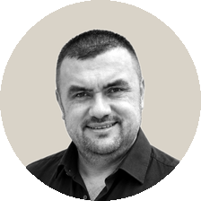

A quiénes vas a oír
No es un informe.
Fundadores que construyen allá.
Fundadores que construyen allá.
Una charla, un panel y una conversación abierta con quienes construyen y estudian la IA en América Latina.
Santiago Jiménez
Investigador · EAFIT
01

Cristian Espinal
CTO · INPLUX
02

Jaime Cano
CEO · INPLUX
03
Lo que te llevas
→Dónde está la demanda, sector por sector
→Qué exige llevar IA a producción en la región
→Cómo entrar: aliados, talento y sector público
The State of the Art of AI in LATAM · 10 dic · San Francisco
6 / 7